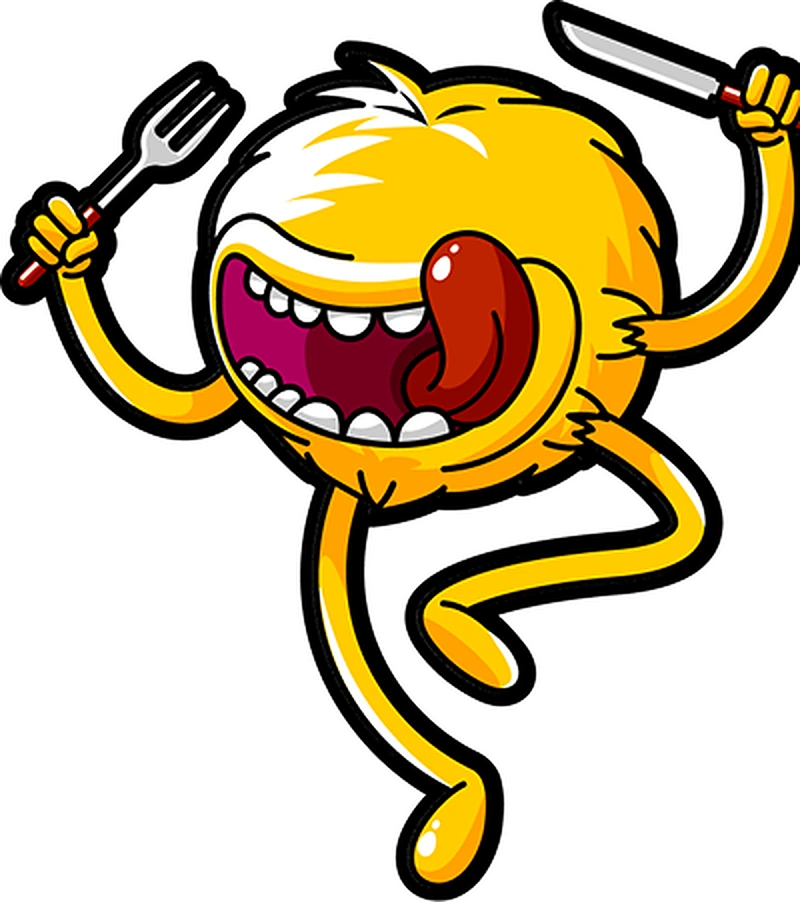

O pedido sai da loja com a rota montada · Gonçalves e Julia

"Com o volume de pedidos que a gente tem, a gente consegue ter uma operação sem Foody Delivery?"
NÃO!
"Ia voltar com esses pedidos pelo menos 3x na loja."
O gerente separa comanda por comanda pra decidir quem leva o quê
A ordem das entregas fica na cabeça de quem monta a saída
Sem ordem pronta, atrasa na rota e o motoboy volta pra loja
Comanda de papel molha e rasga em dia de chuva
O gerente marca os pedidos no mapa da Torre sem separar comanda
Aperta "Despachar juntos" e o One calcula a ordem pelas ruas
O motoboy vê as paradas no celular na ordem 1, 2 e 3, sem papel pra molhar
Num turno real em Cariacica, medir quanto tempo o pedido leva para sair, antes e depois da Torre.